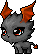

Lv. 63 · #6230401
주니어 루이넬
오르비스의 하늘계단에 살고 있는 새까만 몬스터이다. 샐리온, 라이오너, 그류핀과 닮은 듯 보이지만 털 색이 검고 조그마한 뿔과 날개가 달려 있으며 그 기운 또한 어둡고 사악하다. 자라면 루이넬이 된다.
스탯
레벨 63- HP
- 7,600
- MP
- 100
- EXP
- 245
- 넉백 가능 데미지
- 1200+
- 물리 데미지
- 190
- 마법 데미지
- 200
- 물리 방어력
- 190
- 마법 방어력
- 220
- 속도
- 0
- 63레벨 에서의 필요 명중
- 91.65
- 메소
- 472.5
- 속성관계
- 독속성무효 성속성약점
- 체경비
- 31.02
- 형태
- 동물형
출현 지역
출현 맵 1개맵 이름을 누르면 메이플노트의 맵 정보가 열립니다.
드롭 테이블
전체 6개| 아이템 | 아이템 ID | 드롭 확률 |
|---|---|---|
| 마법의 가루(파랑) | 4007002 | 0.03% |
| 마법의 가루(초록) | 4007003 | 0.03% |
| 폴암 제작의 촉진제 | 4130009 | 0.01% |
| 완드 제작의 촉진제 | 4130010 | 0.01% |
| 단검 제작의 촉진제 | 4130014 | 0.01% |
| 전신 갑옷 행운 주문서 100% | 2040515 | 0.007% |
조건에 맞는 드롭 아이템이 없습니다.
확률은 메이플노트에 게시된 값입니다. 아이템 이름을 누르면 원본 아이템 정보가 열립니다. 과거 버전 데이터이므로 실제 메이플랜드와 다를 수 있습니다.